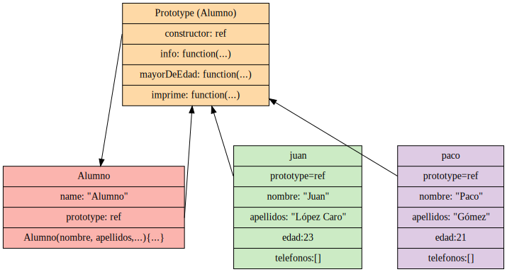
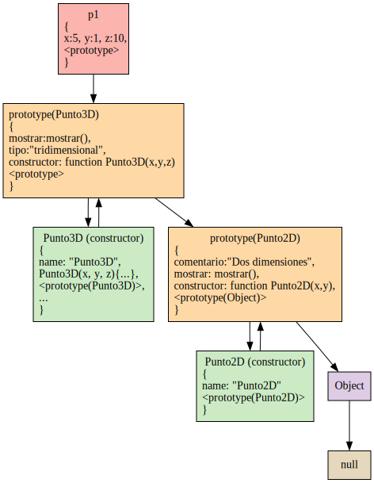
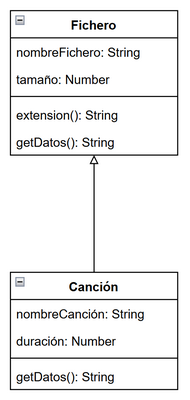

A los objetos que creamos directamente en el código (en lugar de ser instancias una clase) en JS a veces se les conocen como objetos literales.
Podemos pensar en ellos como un conjunto de variables y funciones (propiedades o atributos) encapsuladas bajo un mismo nombre. Estos datos se almacenan usando pares clave-valor (o key:value). Funcionan por tanto de manera similar a un objeto de tipo map.
Importante: los objetos se pasan a las funciones por referencia, no por valor.
Importante: cuando se crea una constante que es un objeto, la referencia no puede cambiar, pero el contenido del objeto sí.
Referencias:
Se puede crear un objeto vacío de dos maneras (sin diferencias entre ellas, aunque la primera es más compacta y es la preferida):
let alumno = {}
let usuario = new Object();
Para crear un objeto con atributos podemos usar:
let alumno = {
nombre: "Javier",
apellidos: "Mancera Fernández",
edad: 42, //se puede terminar con una coma o no
}
Se accede a las propiedades usando el operador .:
if( alumno.edad >=18){
console.log( `El alumno ${alumno.nombre} ${alumno.apellidos} es mayor de edad`);
}
Nota: Si queremos propiedades con más de una palabra las colocaremos entre comillas dobles, pero es mejor evitarlo y en su lugar usar camelCase.
También se puede acceder con corchetes, lo que puede ser interesante si tenemos una propiedad con espacios:
alumno["nombre"] = "Marcos"; alumno["mayor de edad"] = true;
Se pueden indicar en la creación o añadirlas dinámicamente luego.
En la creación con sintaxis abreviada y sin abreviar:
// En la creación
let alumno = {
nombre: "Javier",
apellidos: "Mancera Fernández",
edad: 42,
saludo(){ console.log("Hola, soy " + this.nombre); },
nombreCompleto: function (){ return `${this.nombre} ${this.apellidos}`;}
}
// Dinámicamente
alumno.nombreFormal = function(){
return this.apellidos + ", " +this.nombre
};
Nota: el this, queda vinculado por defecto al ámbito del objeto que lo llamó y por tanto podemos asignar la misma función a dos objetos distintos y que funcione correctamente.
El ámbito del this se establece en el momento de llamar a la función (y puede ser modificado, como veremos más adelante al ver las funciones constructoras).
Abajo puedes ver una posible implementación de una función reutilizada en dos objetos.
Sin embargo, esto no será posible si usamos funciones flecha.
En la web de MDN podemos leer que...
https://developer.mozilla.org/en-US/docs/Web/JavaScript/Reference/Functions/Arrow_functions
El this indica el contexto de ejecución de una función (el ámbito, las variables a las que puede acceder, etc).
En una función normal, el this se refiere al objeto que la llamó (si es desde dentro de un objeto, será ese objeto, en caso contrario será window) y por tanto se establece al llamarla.
En una función flecha, el this se establece en el momento de creación, queda fijado y no puede ser modificado.
console.log(this); //this hace referencia a window
function f(){ console.log(this);}
f(); //this hace referencia a window
const objeto = {funcion:f};
const objeto.funcion() //this ahora hace referencia a Object { funcion: f() }
const f_flecha = () =>{console.log(this);}
f_flecha(); //this hace referencia a window
const objeto2 = {funcion:f_flecha};
const objeto2.funcion(); //this sigue haciendo referencia a window
const objeto3 = { funcion: () => {console.log(this);} }
objeto3.funcion(); //this hace referencia a window
Importante: las funciones flechas no vinculan this al objeto que las llama (sino al objeto window/global) y por tanto no podrán acceder a las propiedades del objeto.
Pero si se crean dentro de otra función heredará el ámbito de ésta (scope) y su this apuntará al this de la función padre (y por tanto sí podrán acceder a las propiedades del objeto). Por el mecanismo de hoisting tiene acceso a las variables de la función padre, incluyendo al this).
Abajo hay una implementación de dos objetos que usan funciones flecha,\n el u1 falla y el u2 no.
Veamos cómo añadir y eliminar propiedades.
Se pueden añadir y eliminar propiedades dinámicamente en tiempo de ejecución, por ejemplo:
alumno.fechaIncorporación = "19-09";
delete alumno.edad;
console.log(`${alumno.nombre} ${alumno.apellidos} se incorporó a clase el ${alumno.fechaIncorporación}`);
La comparación se realiza por referencia:
let a = { x:4, y:6 };
let b = a; //a y b son el mismo objeto (a==b y a===b)
let c = { x:4, y:6 }; // a != c
Si necesitamos comparar dos objetos tendremos que iterar por sus propiedades y compararlas una a una. Pero claro, si tenemos propiedades de los objetos que sean a su vez nuevos objetos (o arrays) habría que compararlos también en una función recursiva. Mi recomendación es usar alguna biblioteca de funciones que proporcione esta funcionalidad si se necesita.
https://github.com/loveencounterflow/jseq
Otra opción sencilla es stringificarlas (pero en este caso el orden en el que aparecen las propiedades será importante):
JSON.stringify(a) === JSON.stringify(c); // true
¿Cómo clonamos un objeto en otro diferente? Tres métodos distintos que funcionan si sus propiedades son primitivas (no son otros objetos, por ejemplo).
Iterando por sus propiedades:
let clon = {}; // el nuevo objeto vacío
for (let key in alumno) { //se copian todas las propiedades
clon[key] = alumno[key];
}
Usando spread (recomendada si no hay anidaciones):
let clon = {...alumno}
Usando Object.assing():
let clon = Object.assign( {}, alumno );
Los métodos de arriba funcionarán si todas las propiedades son primitivas, en caso contrario se copiará una referencia a la propiedad en lugar de la propiedad.
let clon = structuredClone( alumno );
Nota: esto fallará si el objeto tiene funciones como atributos. En ese caso tendremos que hacerlo a mano.
Si necesitamos crear varios objetos que comparten el mismo tipo de propiedades, es buena idea crear una función constructora (un constructor). Esta función no devuelve nada.
Convenciones:
function Alumno(nombre, apellidos, edad){
this.nombre = nombre;
this.apellidos = apellidos;
this.edad = edad;
this.teléfonos = [];
this.info = function(){ return `Alumno: ${this.nombre} ${this.apellidos} - Edad: ${this.edad}`};
this.mayorDeEdad = function(){ return (this.edad >=18);};
this.imprime = function(){
let s = this.nombre + " " + this.apellidos + " (" + this.edad + ")";
console.log(s);
};
}
let juan = new Alumno("Juan", "Lopez Caro", 23);
let paco = new Alumno("Paco", "Gómez", 21);
En el código de arriba cada objeto creado con ese constructor tendrá su propia copia de los métodos info(), mayorDeEdad() e imprime(), lo que consumirá más memoria.
La opción más recomendable es incluir los métodos en el prototipo (ver más adelante la herencia prototípica) para que todos los objetos compartan las mismas funciones.
function Alumno(no, ap, ed){
this.nombre = no;
this.apellidos = ap;
this.edad = ed;
this.teléfonos = [];
}
Alumno.prototype.info = function(){ return `Alumno: ${this.nombre} ${this.apellidos} - Edad: ${this.edad}`};
Alumno.prototype.mayorDeEdad = function(){ return (this.edad >=18);};
Alumno.prototype.imprime = function(){
let s = this.nombre + " " + this.apellidos + " (" + this.edad + ")";
console.log(s);
};
let juan = new Alumno("Juan", "Lopez Caro", 23);
let paco = new Alumno("Paco", "Gómez", 21);
Nota: ten en cuenta que si uno de los objetos tiene una propiedad añadida dinámicamente (por ejemplo paco.becado=false;) los métodos del prototipo no lo sabrán (tendremos que añadir su propio método info() para que lo tenga en cuenta, por ejemplo).

Podemos saber si un objeto tiene una propiedad con "edad" in alumno, esto lo buscará en el propio objeto y luego en el prototipo y en el prototipo del prototipo...
Para saber si un objeto tiene él mismo una propiedad directamente se usa hasOwnProperty().
const alumno = {id:1, nombre:"Juan", edad:36}
alumno.hasOwnProperty("edad") //true
alumno.hasOwnProperty("toString") //false
"toString" in alumno //true
Podemos usar el bucle for..in para iterar por sus propiedades.
for(let prop in alumno){
console.log(prop, alumno[prop])
}
Object.freeze() impide la modificación de un objeto. Una vez que está congelado no se puede eliminar, añadir o cambiar sus propiedades.
const alumno = {
id:1,
nombre:"Juan",
edad:36
}
Object.freeze(alumno);
alumno.nombre = "Felipe"; // Sin efecto al modificar propiedad
alumno.edad = 44; // Sin efecto al modificar propiedad
alumno.email = "juan@gmail.com" // Sin efecto al añadir propiedad
Object.seal() impide añadir o eliminar propiedades, pero sí permite la modificación de las existentes.
const alumno = {
id:1,
nombre:"Juan",
edad:36
}
Object.seal(alumno);
alumno.nombre = "Felipe"; // OK. Modificar propiedad
alumno.edad = 44; // OK. Modificar propiedad
alumno.email = "juan@gmail.com" // Sin efecto al añadir propiedad
Algunos ejercicios para practicar.
Crea una web que contenga tres textboxes, uno para el nombre del perro, otro para la edad y otro para la raza. Además habrá los siguientes botones con estos comportamientos:
Nota: la función de array toSorted() puede ser necesaria para no perder el orden original.
Nota: para comparar dos cadenas se puede usar string1.localeCompare(string2, "es");
Crea un constructor de objetos de tipo Crema que tenga un nombre, precio y marca. Además contendrá un array de objetos de tipo Ingrediente, un método addIngrediente(nombre, cantidad) que permitirá añadir un objeto al array, un método removeIngrediente(i) que permite eliminar el iésimo ingrediente y una función toHTMLTable() que devuelva una tabla HTML con todos los ingredientes (se usará el método toHTMLRow() de los ingredientes).
Los objetos de tipo Ingrediente tendrán un nombre y una cantidad en gramos además de un método toHTMLRow() que devuelva una fila de una tabla HTML con todos los atributos.
Nota: en el ejercicio se pide que se devuelva una fila HTML o una tabla HTML, aunque eso es algo que aún no hemos visto. Puedes buscar información sobre cómo hacerlo o bien, de momento, puedes hacer que se devuelva el código HTML que generaría esa fila/tabla.
Un conjunto de números es una colección de números que cumple unas condiciones básicas:
Por eso un conjunto A que contenga los números 1, 5 y 7 y otro conjunto B con los números 5, 7 y 1 serían exactamente el mismo conjunto.
Nota: Javascript ya tiene una implementación de esta estructura de datos llamada Set().
Implementa una función constructora que devuelva un objeto de tipo Conjunto que contenga un array y tres métodos:
* añadir: recibirá un número y lo añadirá al array sólo si el número no pertenece ya al array. * eliminar: si el número que recibe como parámetro ya existe, lo eliminará del array * imprimir: imprimirá por la consola el contenido del array
Crea un constructor que permita crear conjuntos vacíos (si se invoca sin parámetros) y conjuntos con valores (si recibe un array como parámetro).
Ejemplo:
let c1 = new Conjunto(); let c2 = new Conjunto([1,2,3]);
let c = Conjunto(); c.añadir(1); c.añadir(1); c.añadir(1); c.imprimir(); //1 c.añadir(2); c.añadir(1); c.añadir(3); c.imprimir();//1,2,3 c.eliminar(2); c.imprimir();//1,3 c.eliminar(5); c.eliminar(1); c.imprimir();//3
Puedes ampliar el ejercicio añadiendo estas funcionalidades:
Referencia: https://es.javascript.info/prototype-inheritance
La herencia en JS no funciona como otros lenguajes de POO, hasta 2015 con la aparición de ES6 (EcmaScript 6) se decía que JS era un lenguaje que soporta el uso de objetos, pero que no era orientado a objetos.
Empezaremos viendo esta herencia clásica por prototipos antes de ver las clases.
En JS todos los objetos tienen una propiedad oculta __proto__ (que puede ser null). Cuando intentamos acceder a una propiedad de un objeto y no la encuentra, la buscará en el objeto elegido como prototipo (y si no la encuentra ahí la buscará en el prototipo de ese objeto, etc. hasta que llegue a un null).
Por ejemplo, si creas un objeto s={} y haces un console.log(s) imprimirá [object Object]. Nuestro objeto s no tiene un método toString(), pero su prototipo (s.__proto__, que en este caso es Object) sí lo tiene. A su vez el prototipo de Object es null.
No existe la herencia múltiple porque sólo puede haber un objeto prototipo.
Usando el ejemplo de la web javascript.info con objetos literales (sin constructores):
let animal = {
eats: true,
walk() {
alert("Animal da un paseo");
},
};
let rabbit = {
jumps: true
};
//rabbit.__proto__ = animal; // deprecated
Object.setPrototypeOf(rabbit, animal);
console.log("Come: " + rabbit.eats );
rabbit.walk();
Cuando accedemos a rabbit.eats, el motor de JS buscará la propiedad en el objeto rabbit, pero como no se encuentra allí la buscará luego en animal.
Por supuesto animal podría tener otro objeto como prototipo y la cadena de búsqueda podría seguir.
Importante: el parámetro __proto__ no es recomendable usarlo si tenemos alternativa porque su comportamiento no es estándar en todos los entornos de Javascript. Lo ideal es evitar su uso si puede evitarse.
El ejemplo de arriba podría solucionarse también así:
let rabbit = Object.create(animal); rabbit.jumps = true;
Nota: no puede haber referencias circulares, JS mostrará un error si lo hacemos.
Nota: for..in itera también sobre las propiedades heredadas.
Otro ejemplo sería lo que ocurre cuando creamos una función f, esa función tendrá como prototipo Function que a su vez tendrá como prototipo Object y éste tendrá como prototipo null.
function f() → Function → Object → null [1,2,3] → Array → Object → null
Importante: no se recomienda modificar los prototipos de los objetos predefinidos como Object, Array, etc. puede tener consecuencias desastrosas y difíciles de depurar.
Podemos crear un constructor que herede:
Vamos a crear un constructor de objetos Alumno que herede de un objeto persona.
//Objeto base del que queremos heredar
let persona = {
administrador: false,
telefonos: [],
}
Fíjate que no queremos cambiar el prototipo de la función constructura (usaríamos __proto__), sino de los objetos creados con ella por eso usaremos prototype (que sólo está disponible para funciones constructoras).
// Función constructora
function Alumno(no, ap, ed){
this.nombre = no;
this.apellidos = ap;
this.edad = ed;
}
Alumno.prototype.info = function(){
return `Alumno: ${this.nombre} ${this.apellidos} - Edad: ${this.edad} - Adm: ${this.administrador}`;
};
Object.setPrototypeOf(Alumno, persona);
//Object.setPrototypeOf(Alumno.prototype, Object.assign({},persona));
let a = new Alumno ("Javier", "Mancera", 42);
console.log("Tlf:" + a.telefonos + ", adm: " + a.administrador);
Importante: con Object.setPrototypeOf(Alumno.prototype, persona); o Alumno.prototype = persona; realmente estamos copiando desde Alumno una referencia a las propiedades de persona, si creamos dos alumnos a1 y a2 y cambiamos el valor de persona.administrador = true; se cambiará el valor en ambos objetos (así funciona la herencia). Sin embargo si ejecutamos a1.administrador=false; se estará creando una nueva propiedad en a1 que será usada en el método a1.info();
Podemos hacer que al crearse un objeto el prototipo sea un clon nuevo del objeto que vamos a usar como prototipo, así cada nuevo objeto tendrá nuevas propiedades (en lugar de referencias). En el ejemplo sería de persona a Alumno usando Object.setPrototypeOf(Alumno.prototype, Object.assign({},persona));
Otra manera, pero de nuevo no recomendada, para la herencia podría ser cambiar el constructor y establecer la herencia allí con el código de abajo, (aunque de nuevo la propiedad __proto__ no es estándar y deberíamos evitarla):
// Función constructora
function Alumno(no, ap, ed){
this.nombre = no;
this.apellidos = ap;
this.edad = ed;
this.__proto__ = persona;
this.info = function(){ return `Alumno: ${this.nombre} ${this.apellidos} - Edad: ${this.edad}`}
}
Este es el método recomendado.
Partimos de la función constructora Persona:
function Persona(nombre, edad){
this.nombre = nombre;
this.edad = edad;
this.estado = "inactivo";
this.saludar = function(){
return `Hola, soy ${nombre} y tengo ${edad} años)`;
}
}
Persona.prototype.saludar = function(){
return `Hola, soy ${nombre} y tengo ${edad} años)`;
};
Usaremos call() para llamar al constructor de Persona. Esta función permite establecer el valor del this de la función a la que llama.
function Alumno(nombre, edad, curso){
Persona.call(this, nombre, edad);
this.curso = curso;
// Sobreescritura del método saludar()
//this.saludar=function(){
// return `Hola, soy ${this.nombre}, estoy en ${this.curso} y mi estado es ${this.estado}`;
//}
}
// Si necesitamos que se hereden los cambios realizados en el prototipo de Persona
// Por ejemplo: Persona.prototype.activo = false;
Object.setPrototypeOf(Alumno.prototype, Persona.prototype); // Hereda de Persona
// deprecated
//Alumno.prototype = Object.create(Persona.prototype);
//Alumno.prototype.constructor = Alumno;
Herencia: objAlumno → Alumno.prototype → Persona.prototype → Object.prototype → null
Importante: fíjate que hemos llamado al constructor de Persona al principio de todo y de esa manera incorporamos sus atributos en Alumno. Es importante es entender que cuando creamos un objeto de tipo Alumno no creamos un objeto de tipo Persona (el padre) y otro de tipo Alumno, sino que sólo hay un objeto (el this lo hace posible). Esto implica que no podemos repetir nombres de métodos o propiedades porque serán sobreescritos.
¿Qué pasaría si llamamos al constructor de Persona al final, tras definir el método saludar() en el constructor Alumno?. Piénsalo antes de pulsar el botón.
Veamos finalmente cómo añadir métodos y propiedades comunes a todos los objetos creados desde nuestro constructor.
Si queremos añadir nuevas propiedades o métodos comunes a todos los objetos creados con el constructor Persona Lo haremos a partir del prototipo de la función constructora.
Alumno.prototype.activo=false;
Alumno.prototype.getActivo = function(){
return "Activo: "+ this.activo;
}
Estas propiedades podrán ser sobreescritas para objetos concretos:
let a1 = new Alumno("Pepe", 34, "daw");
let a2 = new Alumno("Juan", 60, "smr");
a1.activo=true;
a2.getActivo=function(){
return "hola caracola";
}
console.log(a1.getActivo());
console.log(a2.getActivo());
console.log(a2.__proto__.getActivo()); //la función del prototipo
Ejemplo de herencia prototípica entre constructores
function Punto2D(x, y){
this.x=x;
this.y=y;
}
function Punto3D(x, y, z){
Punto2D.call(this,x,y);
this.z=z;
}
// Establecemos la herencia
Object.setPrototypeOf( Punto3D.prototype, Punto2D.prototype );
Punto3D.prototype.mostrar = function(){ return `${this.x}, ${this.y}, ${this.z}`};
Punto2D.prototype.mostrar = function(){ return `${this.x}, ${this.y}`};
Punto3D.prototype.tipo = "tridimensional";
Punto2D.prototype.comentario = "Dos dimensiones";
let p1 = new Punto3D(5,1,10);
let p2 = new Punto3D(5,1,3);
let p3 = new Punto2D(1,2);
console.log( p1.mostrar() );
console.log( p2.mostrar() );
console.log( p3.mostrar() );
¿Cómo sería el árbol de herencia completo de p1?

Se introdujeron en 2015 como una característica importante, aunque no exenta de cierta controversia.
https://everyday.codes/javascript/please-stop-using-classes-in-javascript/
https://dev.to/giantmachines/stop-using-javascript-classes-33ij
https://javascript.plainenglish.io/why-you-should-not-use-classes-in-javascript-ca960d13c625
En React, por ejemplo, se recomienda definir los componentes como funciones en lugar de basarse en clases (posiblemente queden marcadas como deprecated en algún momento).
https://react.dev/reference/react/Component
Ejemplo básico: definición de una clase Persona
class Persona {
// Constructor de la clase
constructor(nombre, edad) {
this.nombre = nombre;
this.edad = edad;
}
saludar() {
console.log(`Hola, soy ${this.nombre} (${this.edad} años).`);
}
}
Nota: si tenemos varios métodos en la clase, éstos no se separan con una coma.
Creación de un objeto de la clase Persona:
// Creación de una instancia de la clase Persona (un objeto)
const persona1 = new Persona("Juan", 30);
// Llamada a un método del objeto
persona1.saludar();
No existe la herencia múltiple.
class Alumno extends Persona {
// Constructor de la clase que llama al padre
constructor(nombre, edad, curso) {
super(nombre,edad);
this.curso = curso; //Importante: super se llama antes siempre
}
saludar() {
super.saludar(); //llama al método del padre que hemos sobreescrito
alert(`¡Hola, soy {this.nombre}!`);
}
}
Referencias:
Crea una clase Fichero cuyos atributos sean nombreFichero y tamaño y que tenga un método extensión() que devuelva la extensión del fichero y un método getDatos() que devuelva una cadena de caracteres con el nombre del fichero y el tamaño entre paréntesis.
Crea una clase Canción que herede de fichero cuyos atributoas serán nombreCanción y duración y tendrá un método getDatos() que devolverá en una cadena de caracteres el nombre de la canción, la duración y el tamaño del fichero.
Crea una web que cuatro textboxes (para el nombre del fichero, el tamaño, el nombre de la canción y la duración respectivamente), un grupo de radio buttons y dos botones: Agregar y Mostrar.
Al arrancar se creará un array de ficheros vacío.
Los radio buttons tendrán dos opciones: fichero y canción.
Cuando se pulse el botón de Agregar se mirará el radio button selecionado. Si la opción elegida es canción, se recuperarán los datos que correspondan de los textboxes, se creará un objeto de tipo Canción y se añadirá al array de ficheros. Si la opción elegida es fichero se creará un objeto de tipo Fichero y se añadirá al array.
Cuando se pulse el botón de Mostrar se mostrará el contenido del array en una lista, llamando para cada objeto del array al método getDatos().

Intenta repetir el ejercicio usando herencia prototípica y funciones constructoras (sin usar clases).
Crea la siguiente clase:
class P{
constructor() {}
saludo(){console.log("Hola caracola");}
hola(){this.saludo()}
}
Crea un objeto y llama al método saludo() y luego al método hola():
let p = new P(); p.saludo(); p.hola();
Javier Mancera Fernández
https://www.youtube.com/@Profesorinfo-x